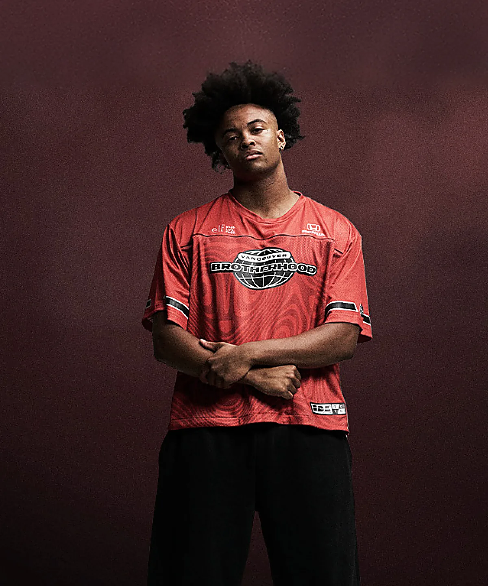
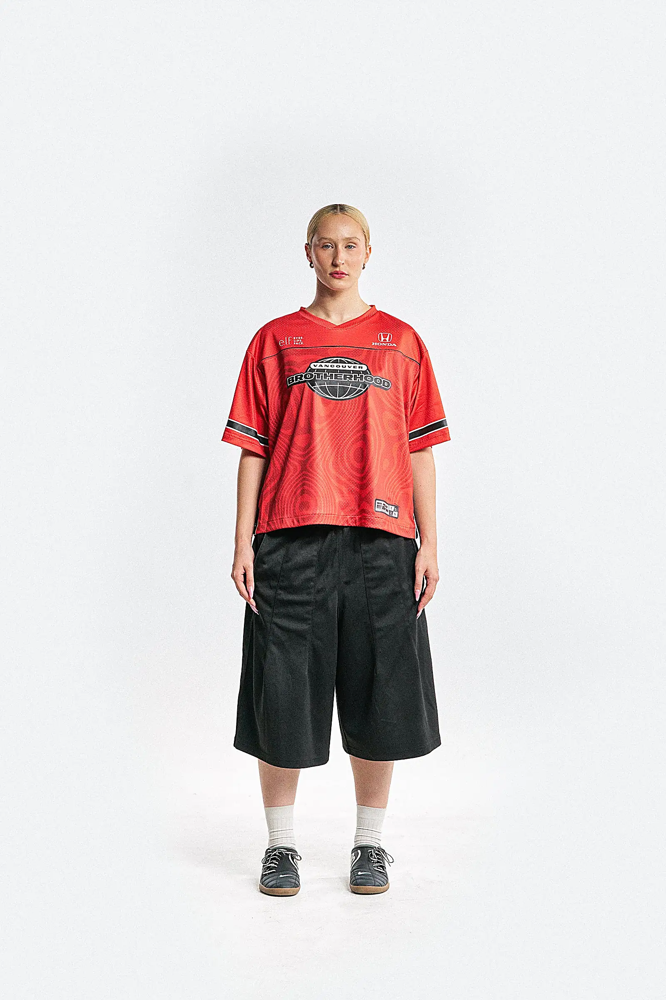

Vancouver, CAN
Vancouver, CAN Seoul, KOR
Seoul, KOR



Brotherhood Vancouver, CAN
IDL Brotherhood Short Sleeve Red Jersey
Rp 2.109.000
Cut:
Size:
- Ships from Seoul in 2–4 business days
- Official league kit — same spec the crews compete in
Description
Fabric & fit
Shipping & returns
Free shipping on US orders over $160. Everything else ships tracked to 60+ countries at checkout rates.
Unworn kit goes back within 30 days. Team-name customisations are final sale.